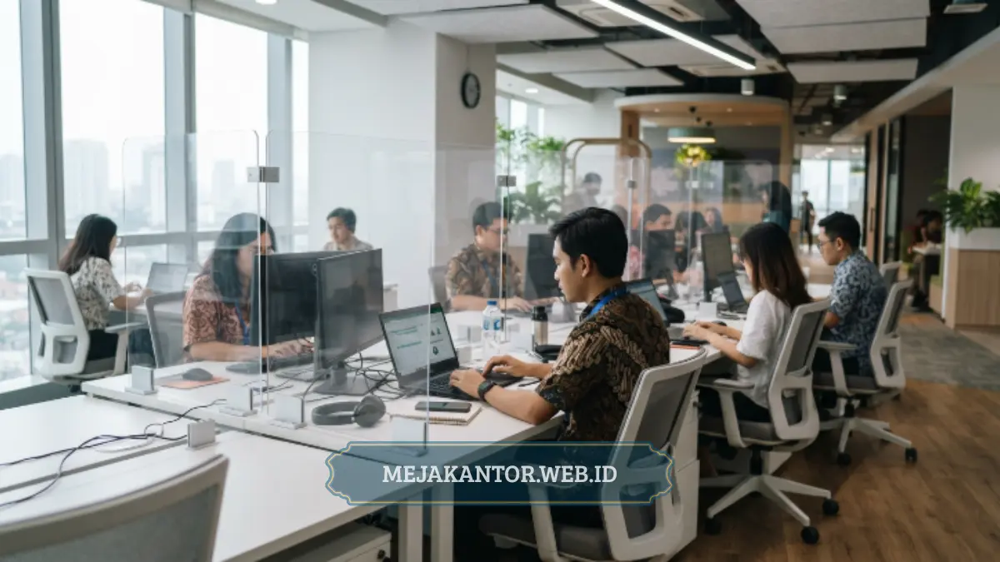

Partisi workstation PWS-Akrilik adalah sekat pembatas meja kerja berbahan akrilik bening atau frosted yang dipasang di atas meja staff untuk memberi privasi visual, batas ruang kerja, dan tampilan kantor yang lebih rapi.
Produk ini cocok untuk kantor, instansi, dan ruang kerja bersama yang membutuhkan pembatas ringan namun tetap terlihat profesional. Mejakantor.web.id menyediakan partisi workstation PWS-Akrilik siap pasang dengan berbagai ukuran sesuai kebutuhan ruang kerja Anda.
- Partisi workstation PWS-Akrilik berfungsi sebagai pembatas visual antar meja staff tanpa menutup pencahayaan ruangan.
- Material akrilik lebih ringan dan tahan pecah dibanding kaca, sehingga lebih aman untuk lingkungan kantor.
- Cocok dipasang pada meja staff berjajar, meja kerja sofa, maupun layout open plan office.
- Perawatan mudah karena permukaan akrilik tidak mudah tergores bila dibersihkan dengan benar.
- Tersedia dalam berbagai ukuran dan ketebalan sesuai kebutuhan proyek kantor maupun instansi.
Apa Itu Partisi Workstation PWS-Akrilik
Partisi workstation PWS-Akrilik adalah panel pembatas berbahan akrilik yang dipasang secara vertikal di sisi atau tengah meja kerja. Fungsi utamanya adalah membatasi pandangan langsung antar karyawan tanpa menghalangi cahaya alami maupun cahaya lampu ruangan, karena sifat akrilik yang transparan atau semi transparan.
Berbeda dengan sekat kayu atau partikel yang masif, partisi akrilik memberi kesan ruang kerja yang tetap terbuka secara visual meski tiap staff tetap memiliki area kerja pribadi.
Produk ini umumnya digunakan pada layout kantor open plan, ruang customer service, ruang admin, hingga area kerja bersama di instansi pemerintah maupun perusahaan swasta.
Ketebalan akrilik yang digunakan biasanya berkisar pada rentang tertentu tergantung kebutuhan kekuatan dan tampilan, dan ukuran panel disesuaikan dengan dimensi meja staff yang sudah ada maupun meja baru yang dipesan.
Mengapa Kantor Modern Membutuhkan Partisi Akrilik
Apa Manfaat Partisi Akrilik untuk Produktivitas Kerja
Partisi akrilik membantu mengurangi distraksi visual antar staff sehingga karyawan dapat lebih fokus pada pekerjaan masing-masing tanpa merasa terkurung. Sekat ini memberi batas ruang personal yang jelas, namun tetap mempertahankan kesan terbuka pada ruangan karena sifat material yang transparan.
Selain aspek fokus kerja, partisi ini juga membantu menjaga kerapian visual ruang kantor. Barang-barang pribadi di meja staff tidak langsung terlihat oleh staff di sebelahnya, sehingga tampilan ruang kerja terlihat lebih tertata meski aktivitas kerja tetap berlangsung normal.
Bagaimana Partisi Akrilik Mendukung Kebersihan dan Higienitas Ruang Kerja
Permukaan akrilik tidak menyerap debu dan cairan sebagaimana material berpori seperti kain atau kayu tanpa lapisan, sehingga lebih mudah dibersihkan dengan lap basah biasa. Karakteristik ini membuat partisi akrilik banyak dipilih untuk ruang kerja yang mengutamakan kebersihan, termasuk area customer service, ruang admin, dan ruang kerja bersama dengan mobilitas staff yang tinggi.
Kemudahan perawatan ini juga berarti biaya pemeliharaan jangka panjang menjadi lebih efisien, karena panel tidak memerlukan penanganan khusus seperti pengecatan ulang atau pelapisan tambahan secara berkala.
Keunggulan Material Akrilik Dibanding Kaca dan Kayu
Akrilik memiliki bobot yang jauh lebih ringan dibanding kaca dengan ketebalan setara, sehingga proses instalasi menjadi lebih cepat dan tidak membebani struktur meja secara berlebihan.
Dari sisi keamanan, akrilik jauh lebih tahan terhadap benturan dan tidak pecah menjadi serpihan tajam seperti kaca apabila terkena tekanan, sehingga risiko cedera di area kerja dapat ditekan.
Dibandingkan sekat kayu atau partikel board, partisi akrilik unggul dari sisi pencahayaan karena tidak menghalangi cahaya masuk ke area kerja staff. Ruangan tetap terasa terang meski jumlah sekat bertambah, sehingga kebutuhan pencahayaan tambahan pada ruang kerja dapat lebih efisien.

Spesifikasi dan Pilihan Ukuran Partisi Workstation PWS-Akrilik
Partisi workstation PWS-Akrilik tersedia dalam beberapa pilihan ukuran tinggi dan panjang yang disesuaikan dengan dimensi meja staff standar maupun meja custom. Ketebalan panel akrilik juga dapat disesuaikan berdasarkan kebutuhan kekuatan struktural, misalnya untuk area dengan mobilitas tinggi yang membutuhkan panel lebih tebal.
Finishing permukaan tersedia dalam pilihan bening transparan maupun frosted semi buram, tergantung tingkat privasi visual yang dibutuhkan ruang kerja. Sistem pemasangan umumnya menggunakan braket atau klem khusus yang dapat dipasang pada meja staff yang sudah ada tanpa memerlukan modifikasi besar pada struktur meja.
Berapa Kisaran Harga Partisi Workstation Akrilik
Harga partisi workstation PWS-Akrilik bervariasi tergantung ukuran, ketebalan akrilik, jenis finishing, dan jumlah unit yang dipesan. Secara umum, semakin tebal dan semakin besar dimensi panel, semakin tinggi pula biaya produksinya. Pemesanan dalam jumlah besar untuk kebutuhan proyek kantor atau instansi biasanya memperoleh penyesuaian harga khusus dibanding pembelian satuan.
Untuk mendapatkan estimasi biaya yang akurat sesuai kebutuhan ruang kerja Anda, tim mejakantor.web.id siap memberikan konsultasi dan penawaran harga sesuai spesifikasi proyek, baik untuk kebutuhan skala kecil maupun pengadaan dalam jumlah besar.
Kesalahan Umum Saat Memilih Partisi Workstation
Salah satu kesalahan yang sering terjadi adalah memilih ketebalan akrilik yang terlalu tipis untuk area dengan mobilitas kerja tinggi, sehingga panel mudah bergetar atau kurang stabil saat digunakan dalam jangka panjang. Kesalahan lain adalah tidak menyesuaikan ukuran partisi dengan dimensi meja yang sudah ada, sehingga hasil pemasangan terlihat kurang presisi dan mengganggu estetika ruang kerja.
Banyak pihak juga kurang memperhitungkan kebutuhan finishing yang sesuai dengan fungsi ruang, misalnya memilih akrilik bening untuk area yang sebenarnya membutuhkan tingkat privasi lebih tinggi. Konsultasi dengan penyedia yang berpengalaman dapat membantu menghindari kesalahan-kesalahan tersebut sejak tahap perencanaan.
Tips Memaksimalkan Fungsi Partisi Workstation Akrilik
Pastikan ukuran dan tinggi partisi disesuaikan dengan posisi duduk staff agar fungsi privasi visual tercapai secara optimal tanpa mengurangi sirkulasi udara dan pencahayaan ruangan.
Pertimbangkan pula kombinasi antara panel bening dan frosted pada bagian tertentu untuk menyeimbangkan kebutuhan privasi dan estetika ruang kerja secara keseluruhan.
Lakukan pembersihan berkala menggunakan lap lembut dan cairan pembersih yang sesuai untuk material akrilik agar permukaan tetap jernih dan bebas goresan dalam jangka panjang.
Bagaimana Cara Memilih Spesifikasi Partisi Workstation yang Tepat
Pemilihan spesifikasi partisi workstation sebaiknya dimulai dari pemetaan kebutuhan ruang kerja, termasuk jumlah meja staff, layout ruangan, dan tingkat privasi yang dibutuhkan tiap divisi.
Ruang kerja dengan tingkat interaksi tinggi antar staff, misalnya divisi kreatif atau tim proyek, umumnya cukup menggunakan panel bening dengan ketinggian standar agar kolaborasi tetap berjalan lancar.
Sebaliknya, divisi yang menangani data sensitif seperti keuangan atau HRD dapat mempertimbangkan kombinasi panel frosted pada bagian tertentu untuk menambah tingkat privasi visual tanpa menghilangkan pencahayaan ruangan secara keseluruhan. Pengukuran dimensi meja yang akurat sebelum pemesanan juga penting agar hasil pemasangan partisi presisi dan tidak menyisakan celah yang mengurangi fungsi sekat.
Kapan Waktu yang Tepat Mengganti atau Menambah Partisi Workstation
Penambahan atau penggantian partisi workstation umumnya relevan dilakukan ketika kantor melakukan renovasi ruang kerja, penataan ulang layout meja staff, atau penambahan jumlah karyawan yang membutuhkan area kerja baru. Kondisi partisi lama yang sudah tergores parah, retak, atau warnanya memudar juga menjadi indikator bahwa penggantian perlu dipertimbangkan agar tampilan ruang kerja tetap terjaga.
Momen pergantian tahun anggaran atau proyek pengadaan fasilitas kantor baru juga sering menjadi waktu yang tepat untuk mengevaluasi kebutuhan partisi secara menyeluruh, termasuk mempertimbangkan upgrade ke material akrilik bagi kantor yang masih menggunakan sekat kayu atau partikel board.
Bagaimana Proses Pemesanan Partisi Workstation PWS-Akrilik di Mejakantor.web.id
Proses pemesanan dimulai dari konsultasi kebutuhan, di mana tim mejakantor.web.id membantu menentukan ukuran, ketebalan, dan jenis finishing yang sesuai dengan layout ruang kerja Anda. Setelah spesifikasi disepakati, tim akan memberikan penawaran harga dan estimasi waktu pengerjaan sesuai jumlah unit yang dipesan.
Setelah proses produksi selesai, partisi akan dikirim dan dipasang sesuai kesepakatan, dengan dukungan sistem braket yang disesuaikan dengan kondisi meja staff di lokasi. Layanan konsultasi ini tersedia baik untuk pengadaan skala kecil maupun proyek besar dengan kebutuhan puluhan hingga ratusan unit partisi.
Partisi workstation PWS-Akrilik merupakan solusi sekat kantor yang menggabungkan fungsi privasi, kemudahan perawatan, dan tampilan modern dalam satu produk. Material akrilik memberi keseimbangan antara batas ruang kerja personal dan kesan ruangan yang tetap terbuka secara visual, menjadikannya pilihan yang relevan untuk kantor maupun instansi yang sedang menata ulang ruang kerja.
Jika Anda sedang mempertimbangkan pengadaan partisi workstation untuk kantor atau instansi, mejakantor.web.id siap membantu menyediakan partisi workstation PWS-Akrilik sesuai spesifikasi dan kebutuhan proyek Anda. Hubungi tim mejakantor.web.id sekarang untuk konsultasi ukuran, spesifikasi, dan penawaran harga terbaik.

Mega Anggun
Penulis Konten & Spesialis Penataan Interior Kantor. Berpengalaman dalam memberikan tips ergonomi dan memilih furnitur terbaik untuk menunjang produktivitas kerja.